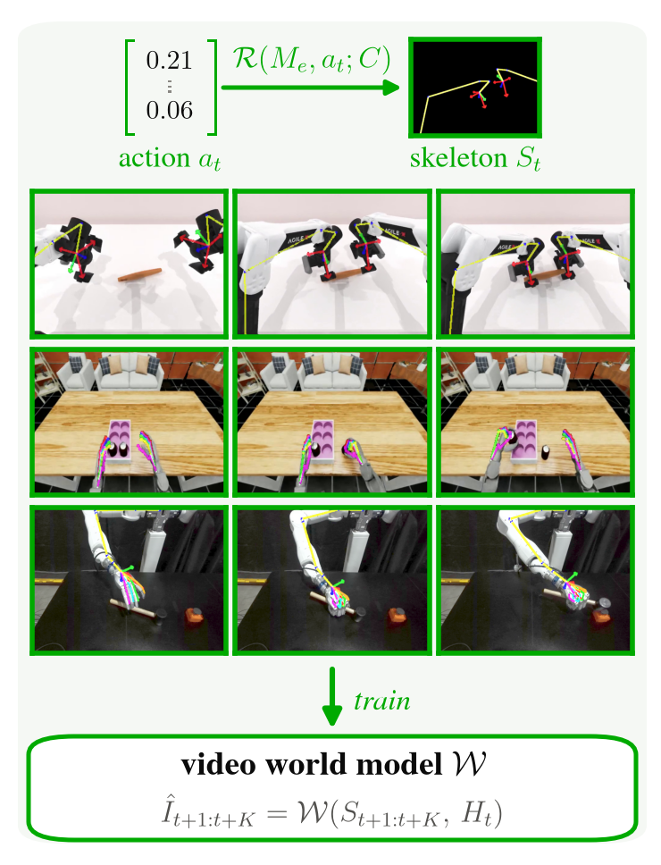
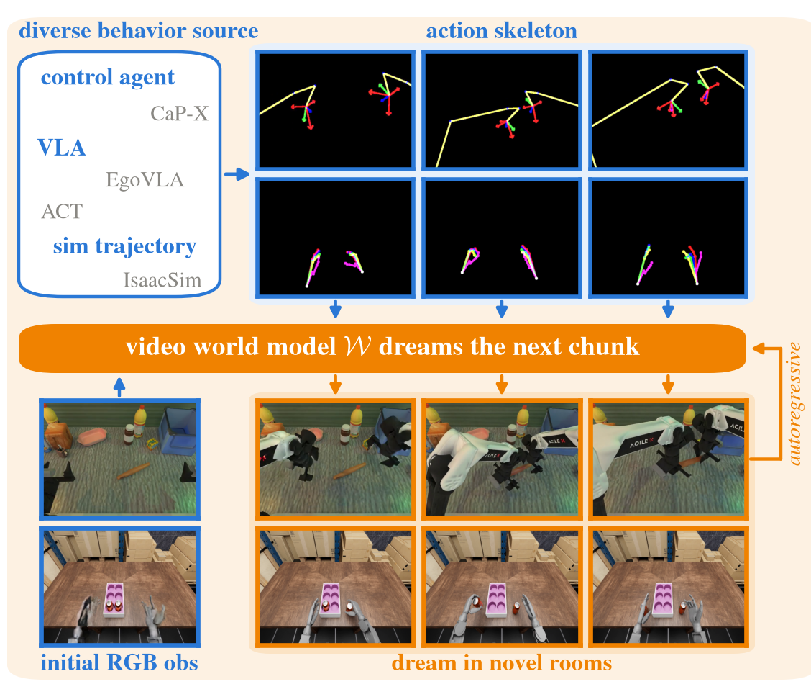
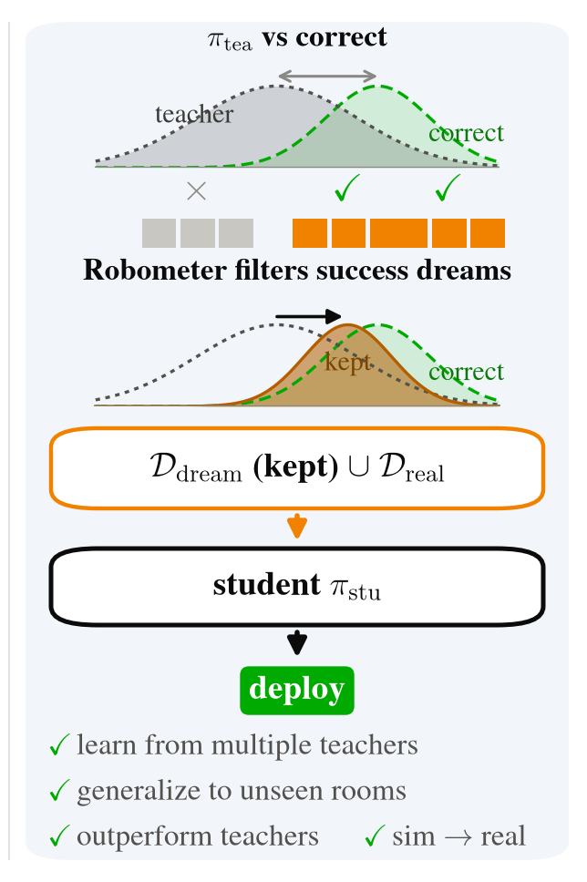
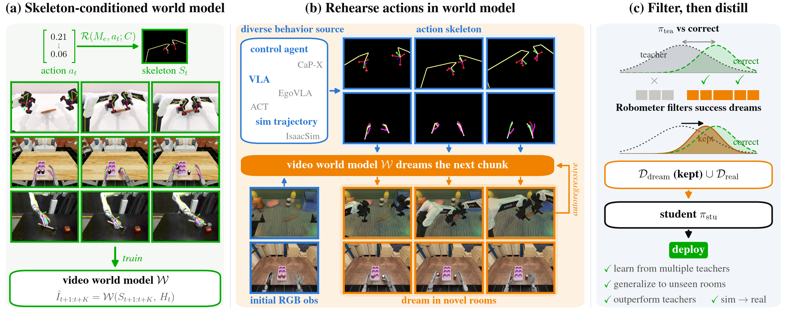
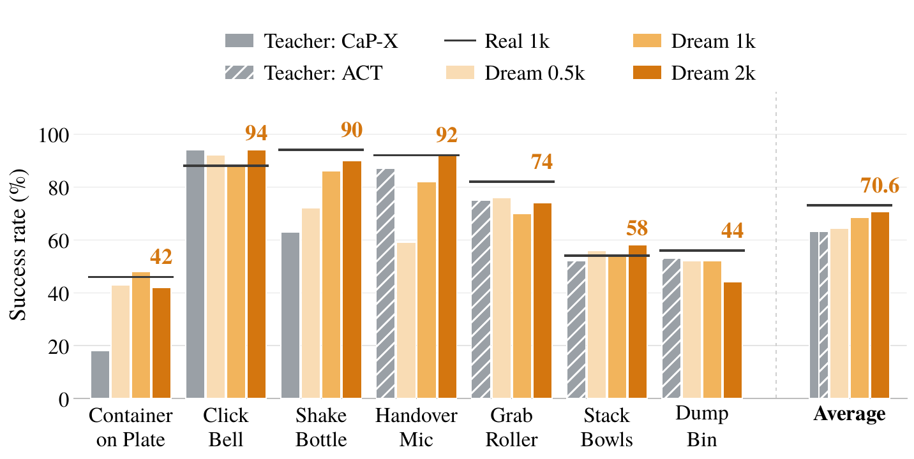
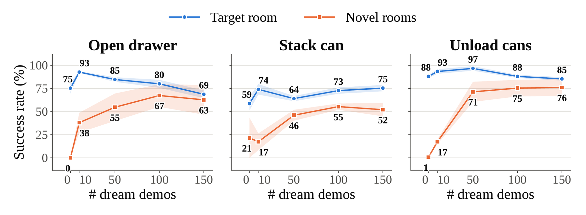
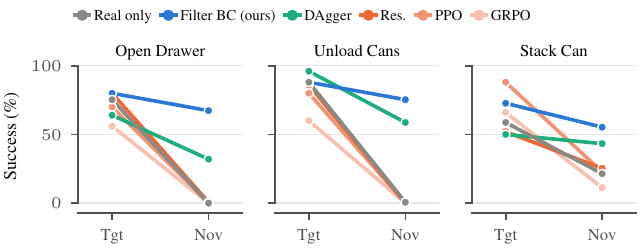
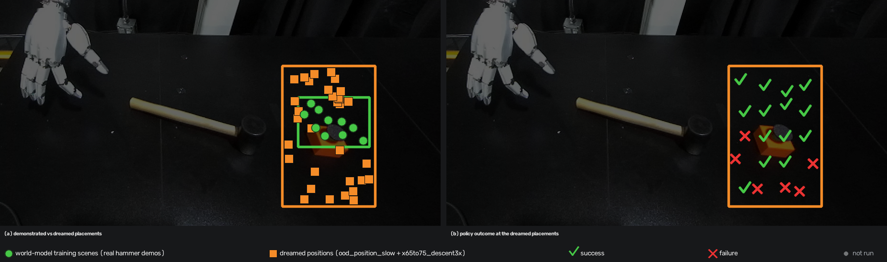

Dream Rehearsal:Video World Models Turn Any Source of Action
into Robot Demonstrations
A skeleton-conditioned video world model becomes a demonstration generator. Any teacher
rehearses inside it, a filter keeps only what works, and the surviving dreams train one
student policy that beats its teachers, dreams in rooms it never saw, and transfers to real
hardware from five real demonstrations.
Abstract
Dexterous manipulation is bottlenecked by demonstrations: every new scene, object set or
embodiment means teleoperating the robot again. Action-conditioned video world models could
supply that data, but existing uses are narrow — a policy is improved by resampling
its own rollouts, the rollouts stay in the scene the model was fit to, and the platform is
almost always a parallel-jaw gripper. We present DreamRehearse, which
treats such a model as a demonstration generator and lifts all three restrictions.
Conditioning on rendered robot skeletons rather than raw actions makes the model
embodiment-invariant, and predicts future video more accurately than action-conditioned
baselines. Any source of motion can rehearse inside it: a coding agent, a learned
specialist, a generalist VLA or a trajectory validated in simulation. A success classifier
keeps only the rollouts that work. On RoboTwin, pooled dreams lift
π0.5 from 1.9% to 68.9%; on a bimanual dexterous hand, dreams in
unseen rooms raise out-of-distribution success from 10.4% to 61.1%; on real hardware,
simulated trajectories dreamed into real observations reach 83.3% on three dexterous tasks from five
real demonstrations each.
Hongyi Chen,
Liquan Wang,
Shuo Cheng,
Qiyang Yan,
Jeffrey Ichnowski,
Zackory Erickson,
Homanga Bharadhwaj,
Nur Muhammad Mahi Shafiullah
Three steps turn a world model into a demonstration generator
Read down the left. The panel on the right is that step’s part of the pipeline figure, and it
changes as you go: (a) → (b) → (c). Click it to open it full size.

aSkeleton-conditioned world model
One world model, every embodiment.
Raw action vectors are not comparable across robots — a given coordinate names a different joint on
each platform. A rendered skeleton is one format for all of them, and it is
spatially grounded: it occupies the same image coordinates as the robot it describes. Prediction
becomes a translation from drawn motion into photorealistic appearance, rather than a map from an abstract
vector onto an entire image. We LoRA-fine-tune an OSCAR-2B video diffusion transformer, with sparse
history frames to keep long rollouts anchored and failure episodes mixed in so the filter has something
to reject.

bRehearse actions in the dream
Who dreams is a free variable.
Prior work resamples the student policy inside the model — which requires the policy to already
succeed often enough for anything to be kept. We decouple actor from student: a coding agent, a per-task
specialist, a generalist VLA, or a trajectory validated in simulation all rehearse inside the world model,
even in combination. The dreams happen in rooms, backgrounds and object placements the robot has never
entered, so the generated demonstrations cover conditions no recording session did.

cFilter, then distill
Keep only the dreams that worked.
Two things can go wrong in a dream: the actions may fail, or the world model may render the outcome
incorrectly. Both appear to a scorer as a task that was not completed. Every rollout is scored by
Robometer and kept only if its final success exceeds a threshold fit from real episodes. Surviving dreams
are consumed exactly like real demonstrations — no auxiliary loss, no importance weight — so
the pipeline drops into any imitation-learning recipe unchanged.
(a) one skeleton format, four embodiments(b) any teacher rehearses, in rooms it never saw(c) keep the successes, distill the student
Show the full pipeline figure

C1
21.47PSNR
Skeleton conditioning wins on every metric.
A single model covers four embodiments — two grippers and two dexterous hands — and predicts
future video more accurately than action-conditioned baselines
(RISE: 15.82 PSNR, Ctrl-World: 20.56; Ours: 21.47).
FVD drops to 154 from 361.
RoboTwin · ALOHA-AgileX, two parallel-jaw grippers, simulation
Ten tasks in the simulator, clean and randomised scenes. Everything below is the same world model: first its rendering against the simulator's own ground truth, then where it dreams, then what a policy trained on those dreams achieves.
The dream tracks the simulator’s own render
Ground truththe simulator's own render. Not generated.
Dreamgenerated by the world model. The only generated video here.
Skeletonthe conditioning input. Drawn, not predicted.
Loading fidelity comparisons…
More episodes, the simulator's rollout beside the dream of the same
action skeleton. Hover a pair to play both in sync; click to enlarge.
Loading comparisons…
It dreams in scene randomisations no recording session covered
Top strip: what it saw during training. Bottom strip, drifting: where it dreams.
Loading…
Pooled dreams beat the best single teacher, 70.6% to 63.1%
C2
70.6%RoboTwin, 7 tasks
Dreams distill a pool of teachers into one student.
Dreams pooled from five teachers — one CaP-X coding agent and four per-task ACT specialists —
lift π0.5 from 1.9% → 70.6%, above the best
single teacher (63.1%) and within 97% of the same model trained on ground-truth simulator rollouts
(73.1%). Scaling the dreams gives 64.3% at 0.5k, 68.6% at 1k and 70.6% at 2k: the first doubling buys
4.3 points and the second 2.0, so the curve is close to saturating.

Success rate (%) per task, averaged over a clean and a randomized scene, 50 episodes each.
Grey: the stronger of the two teachers for that task, hatched where the ACT specialist is
the stronger one. Amber: the student on 0.5k, 1k and 2k dreams. Black line: the same
student trained on 1k rollouts of those teachers executed in the simulator, which is the
ceiling this is measured against.
EgoBench · Unitree H1 with two Inspire hands, Isaac Sim
Six tasks with a bimanual dexterous hand. Same three questions as above, asked of a different embodiment: how faithfully the model renders, where it can dream, and what the dreams buy a policy.
One model renders the gripper and the dexterous hand
Ground truththe simulator's own render. Not generated.
Dreamgenerated by the world model. The only generated video here.
Skeletonthe conditioning input. Drawn, not predicted.
Loading fidelity comparisons…
More episodes, the simulator's rollout beside the dream of the same
action skeleton. Hover a pair to play both in sync; click to enlarge.
Loading comparisons…
Dreams staged in rooms the model never trained in
Top strip: the one room it trained in. Bottom strip: rooms with tables and backgrounds it never saw.
Loading…
Out-of-distribution success rises from 10.4% to 61.1%
C3
10.4% → 61.1%out-of-distribution rooms
Dreams generalize beyond the recorded scene.
With a bimanual Inspire dexterous hand, the real-only student essentially fails in unseen rooms (0% on
three of five tasks). Co-training on real demos plus dreams staged in rooms the model never trained in
raises OOD success to 61.1%, above the teacher that generated the dreams. The target
room improves too, 64.1% → 83.5%, with no extra real data collected there.
Success rate (%) per task. Tgt: the in-distribution target room.
Nov: three out-of-distribution novel rooms with unseen tables and
backgrounds. Real + dream adds 100 dreams per task, staged in the novel rooms.
Task
Student, real only
Teacher (EgoVLA)
Student, real + dream
Tgt
Nov
Tgt
Nov
Tgt
Nov
Open Drawer
75.3
0.0
57.0
51.0
80.0
67.3
Stack Can
58.7
21.4
67.0
42.0
72.7
55.3
Unload Cans
88.0
0.7
20.0
24.3
88.0
75.3
Insert Can
72.7
0.0
42.2
30.0
90.0
50.7
Close Drawer
25.6
30.0
100
100
86.7
56.7
Average
64.1
10.4
57.2
49.5
83.5
61.1

Adding dreams from novel rooms. Out of distribution the curve rises and saturates around
100 dreams per task. In the target room it peaks early and then drifts down: the real
demonstrations already cover that room, so past a point the dreams only dilute them.
Bands are ±1 std over evaluation scene sets, 50 episodes each.

What to spend imagined interaction on. Each line runs from target-room to novel-room
success for one way of using the model. Filtered behaviour cloning on dreams falls the
least; policy-improvement operators run inside the model and plain augmentation both
give up more.
Real robot · Tianji 7-DoF arm with a 22-DoF Sharpa hand
Trajectories come from the simulator and the world model supplies the images, so the
student trains on dreams of its own workspace. Below: the dreams, then the policy
executing on hardware, then what happens when the scene or the object placement moves
out of distribution.
Simulator trajectories, dreamed into the robot’s own camera view
One episode per row, every task at once, shown three ways: the
real recording, the rendered skeleton that conditions the
world model, and the dream the model generates from that skeleton. Shuffle
re-rolls which recorded episode each row is showing. The three clips in a row are the same
length and run off a single clock, so whatever differs between them is the model and not
three video players drifting apart.
Realground truth — recorded on the robot
Skeletoninput — drawn, not predicted
Dreamoutput — the only generated video here
Loading real-world dreams…
Each row's conditioned on chip says where its skeleton came from, and that
decides what a mismatch means. Where the skeleton was fitted in simulation, the real clip
beside the dream is a different trajectory, so the two are not expected to line up
frame for frame. Only where the skeleton came from the real episode itself is a
frame-for-frame match the right thing to look for.
The real-only policy fails tasks the dream-trained one completes
Real-robot rollouts on three tasks. Both policies are the same ACT recipe on the same five real
demonstrations; ours additionally trains on forty demonstrations dreamed by the
world model, base does not. Each row plays the two rollouts side by side —
click either clip to enlarge it.
Loading real-robot rollouts…
A clip's badge is the outcome of that one rollout: success, failure, or unclear
where the recording does not settle it. The success rates are in the results below.
A tablecloth and kitchen clutter neither policy was shown
Neither policy saw a real demonstration from this scene, but ours
trained on dreams of out-of-distribution scenes, so it is not novel to ours the way it is to
base. This vision shift is the only out-of-distribution condition with
real-robot rollouts: a position-OOD variant exists as dream data but was never rolled out on
the robot, so it is not shown here.
One rollout per policy at a time, and Shuffle re-rolls the two sides
separately: these are independent trials, not matched pairs, so
whichever two land on screen together the pairing is arbitrary. Each badge is the outcome of
that one rollout, not a rate.
Loading out-of-distribution rollouts…
16/20, 17/20 and 17/20, from five real demonstrations
C4
0/20 → 16/20Strike Peg, real Sharpa hand
Dreams carry simulated trajectories onto real hardware.
Simulator trajectories dreamed into real workspace observations train a policy on a Tianji arm with a
22-DoF Sharpa hand, from only five real demonstrations plus dreams. Over 20 trials per
task the real-only policy reaches 0/20 on Strike Peg, 3/20 on Pour and 7/20 on Use Tongs; real + dream
reaches 16/20, 17/20 and 17/20. DP3, trained in simulation on point clouds and
transferred, matches ours on Strike Peg (16/20) but collapses on Pour (2/20) and Use Tongs (0/20)
despite scoring 64% and 56% on those tasks inside the simulator.
Real-robot success over 20 trials per task per policy. DP3 is trained in
simulation on point clouds and transferred; its simulator success over 50 episodes is in
brackets, and is not comparable to the real fractions beside it — that gap
is the point of the row.
Policy
Strike Peg
Pour
Use Tongs
DP3, sim → real
16/20 (92% sim)
2/20 (64% sim)
0/20 (56% sim)
Student, real only
0/20
3/20
7/20
Student, real + dream
16/20
17/20
17/20

The other out-of-distribution axis: where the object is, not what the scene
looks like. Left: the nail placements that were actually demonstrated (green, inside the
box) against the placements that were only ever dreamed (orange). Right: the policy's
outcome at those dreamed placements. This axis has dream data and scored outcomes but no
ours-vs-base rollout videos, which is why it appears here as a figure and not above as
video.
T-Rex · Dexmate Vega-1 with a Sharpa Wave hand, real hardware
The same conditioning carries a fourth embodiment: a simulator trajectory drawn as a
skeleton and painted into real T-Rex pixels.
Loading…
Citation
BibTeX will be updated once de-anonymized.
@inproceedings{dreamrehearse2026,
title = {Dream Rehearsal: Video World Models Turn Any Source of Action
into Robot Demonstrations},
author = {Anonymous},
booktitle = {Under review},
year = {2026}
}